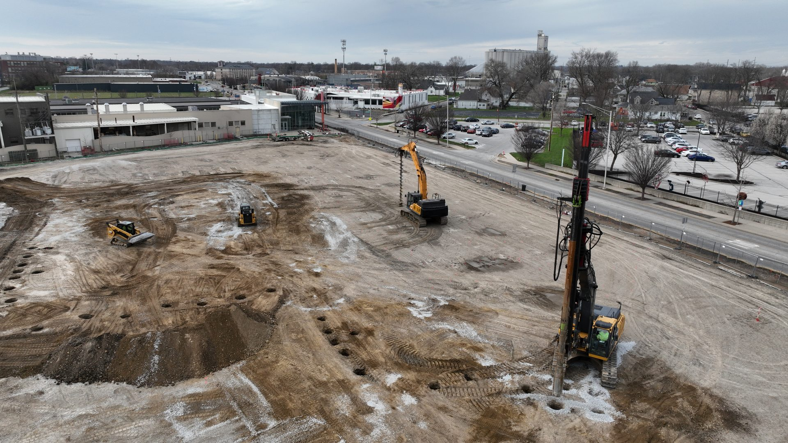
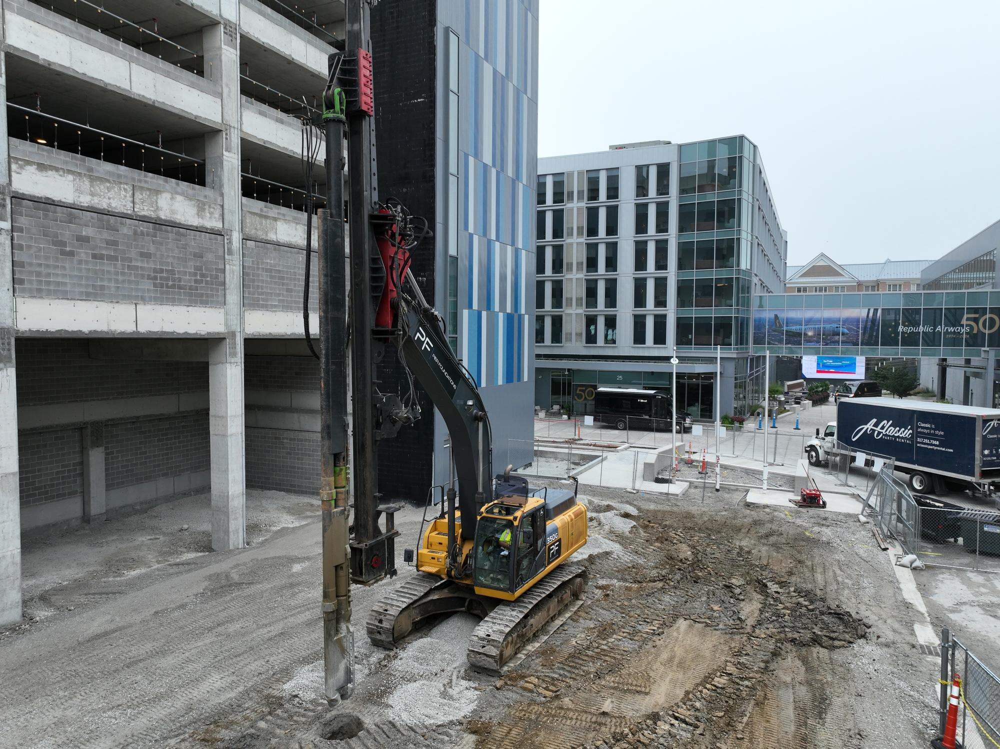
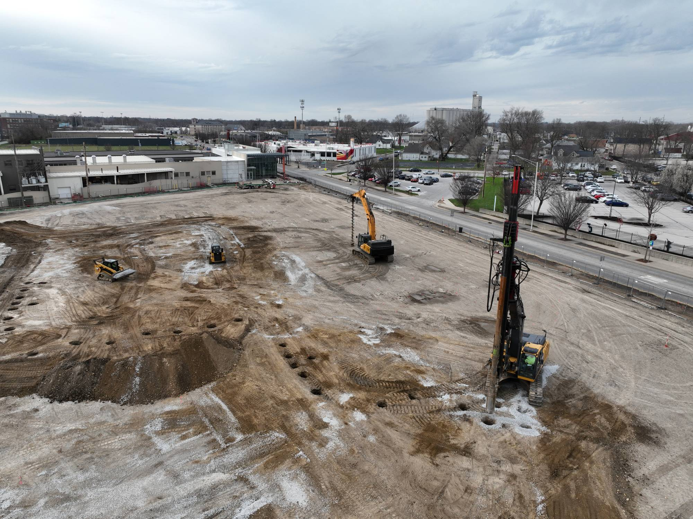
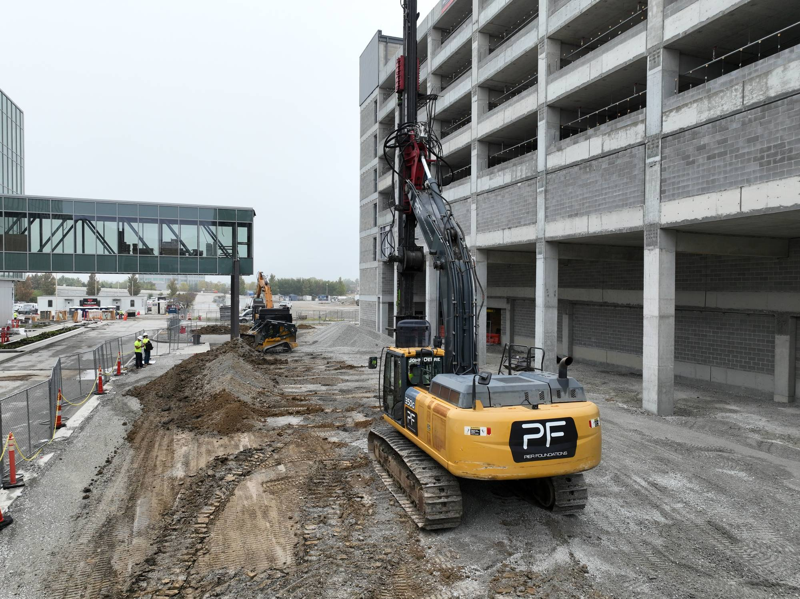
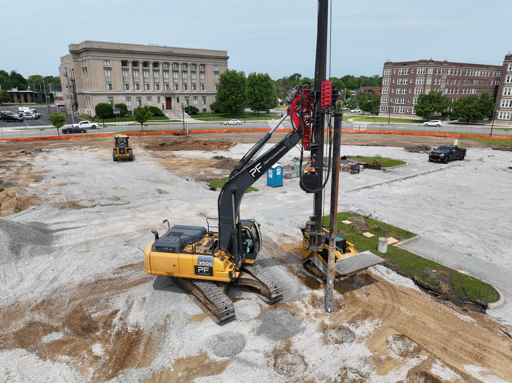

Vibratory Stone Columns
Dense, free-draining stone columns installed by vibratory methods to reinforce soft and loose soils, increase bearing capacity and reduce settlement beneath structures and slabs.
VSC · 24″ & 30″ nominal
Vibratory stone columns and aggregate piers that strengthen weak soils before you build. Engineered, installed and verified by a single accountable team.
We design and install deep ground-improvement systems that let foundations bear on soils that would otherwise need over-excavation or deep piles, saving schedule and cost on commercial projects.
Dense, free-draining stone columns installed by vibratory methods to reinforce soft and loose soils, increase bearing capacity and reduce settlement beneath structures and slabs.
VSC · 24″ & 30″ nominalEngineered aggregate pier elements that provide reliable foundation support for footings, mats and floor systems. A cost-effective alternative to deep foundations on the right sites.
AP · Footing & mat supportSoil reinforcement programs scaled for warehouses, manufacturing, hospitality and the heavy, settlement-sensitive loads of modern data center campuses.
Settlement & bearing controlEarly feasibility input and engineer-of-record-led design help you compare ground-improvement options against deep foundations before the bid is locked, reducing risk and surprises.
Preliminary design & reviewMost of our work is invisible once you build on it. Here is the same engineered process we run on site, from soft soil to solid support.
Real installations captured on site. Each project pairs the right method with the soils and structure it has to support.




Project details reflect verified records. Production figures are confirmed per project on request.
One accountable team carries the work from first feasibility review through final quality verification, so nothing falls between design and the field.
We review the geotechnical report, loads and schedule to confirm whether ground improvement is the right call, and where it saves cost over deep foundations.
An independent professional engineer of record develops the column layout, depths and design parameters, stamped and accountable.
Our crews install vibratory stone columns or aggregate piers with modern, well-maintained equipment, sequenced to keep your site on schedule.
Every column is logged and verified, with modulus testing and calibrated load testing documenting that the ground meets design before you build.
Headquartered in Northeast Indiana and licensed across the region, we mobilize to commercial and data center projects throughout the Midwest.
We take the ground risk off your plate, from the first feasibility look to the last verified column.
Your ground improvement is designed and stamped by an independent professional engineer of record, so the geotechnical risk sits with a licensed PE, not on you.
Every column is logged and verified with modulus and calibrated load testing, giving you a documented record for owners and inspectors, not just a promise.
We carry the work from early feasibility through installation and verification, so nothing falls between the design and the field.
Ground improvement lets your foundations bear on soils that would otherwise need over-excavation or deep piles, protecting your schedule and your budget.
Vibratory stone columns, aggregate piers and modern equipment sized for commercial construction and data center work across the Midwest.
Pier Foundations is a commercial ground-improvement contractor focused on a single discipline: making weak soils strong enough to build on. That focus lets us bring deep expertise, modern equipment and disciplined quality control to every site.
We work as a partner to general contractors and owners across the Midwest, from early feasibility through installation and verification, backed by independent, engineer-of-record-led design.
Stamped, accountable design from an independent professional engineer of record.
Well-maintained vibratory rigs and excavation support sized for commercial work.
Every column logged and verified with modulus and calibrated load testing.
Headquartered in Northeast Indiana, mobilizing across the regional market.
Have a site with marginal soils, settlement concerns or a deep-foundation line item you want to challenge? Send us the basics and we’ll tell you whether ground improvement makes sense.
Talk to a ground-improvement specialist about your next commercial or data center project.
Request a Consultation